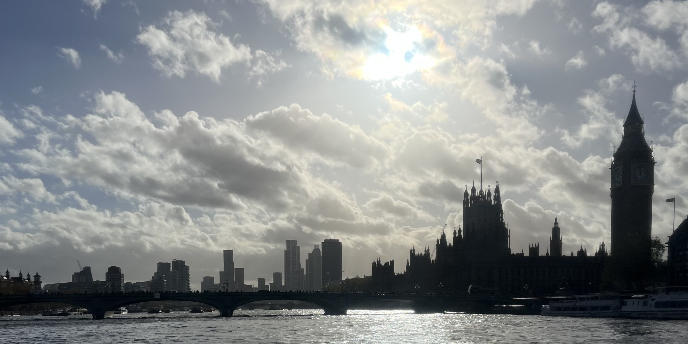
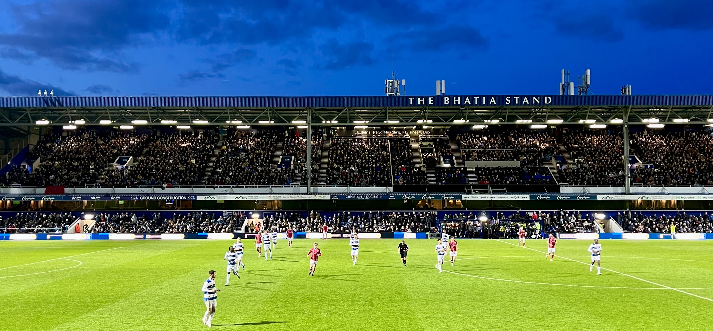
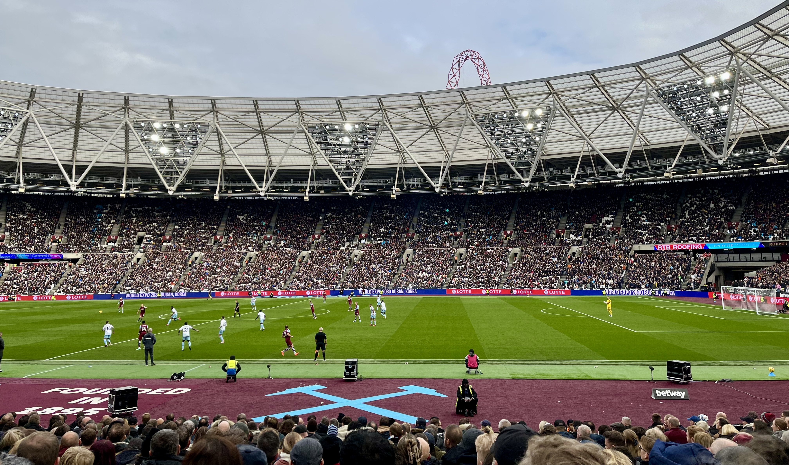
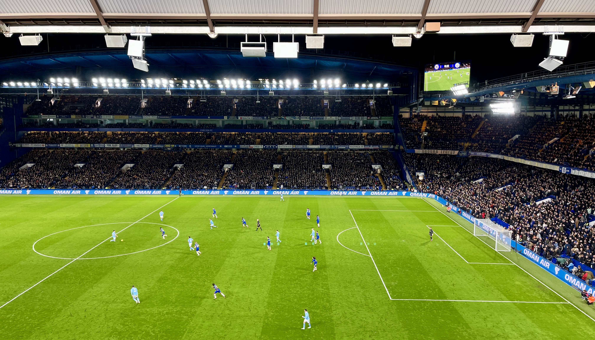
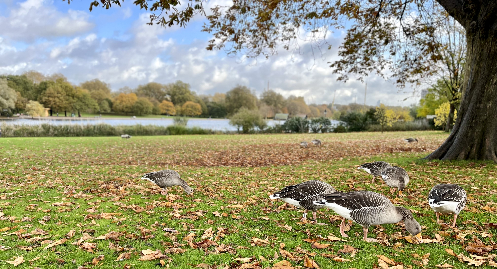
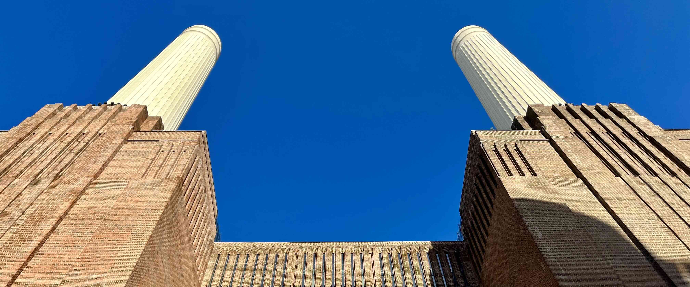

Londýn listopad 2023

Krátce po začátku nové fotbalové sezóny padl mezi fanoušky kvalitního fotbalu návrh, že bychom mohli v listopadu znovu někam vyjet! Návrhu jsem se nebránil, ale naprosto upřímně jsem neměl vůbec čas něco zařizovat, takže jsem řekl, že se přidám, pokud se nebudu muset o nic starat.
Chvíli jsme rozmýšleli, kam se vydat. Padlo několik návrhů, ale nakonec jsme se rozhodli pro budgetový výlet do Londýna. Naplánovali jsme dva zápasy:
Od druhého zmíněného jsme si navíc slibovali účast českých legionářů Tomáše Součka a Vladimíra Coufala, což pro nás bylo velkým lákadlem!
Až na místě jsme se rozhodli pro návštěvu třetího zápasu mezi Chelsea a Manchesterem City, takže výlet nakonec nebyl tak budgetový, jak jsem si původně myslel. Stálo to ale za to!
DEN 0
V sobotu ráno jsem se vzbudil v 7 hodin, nasnídal jsem se a sbalil si věci. V 8:30 mě už před domem čekal Martin a Kuba. Martin nás odvezl na brněnské letiště, kde jsme se sešli s Bertem. V 10:45 nám letělo letadlo do Londýna. Docela pohodlný, když nebydlíte v Kyjově, ale kousek od centra Brna, že jo?
V průběhu letu jsem mazal fotky na telefonu a chilloval. Po příletu jsme si dali lehký oběd, potom sedli na vlak a přesunuli se na hotel. Tam jsme nechali batohy a zavolali si Uber. Přijel pro nás Polák Mateusz, od kterého jsme se během 10minutové cesty dozvěděli, že od svých 5 let vyrůstal ve Velké Británii, a tak neví, kde je Brno ani jak se jmenuje hlavní město Rakouska.
Na Loftus Road Stadium jsme z 11. řady sledovali zápas domácího QPR proti Bristolu City. Po velice bojovném, ale jinak hodně nezáživném výkonu obou celků skončil zápas pravděpodobně spravedlivou remízou 0:0.

Zápas mezi QPR a Bristolem City na Loftus Road Stadium.
Po zápase jsme se jeli ubytovat na hotel a poté jsme zašli na večeři do podniku The Distillers, kde jsem si dal hamburger s halloumi sýrem a hranolky.
Na hotel jsme dorazili kolem 22. hodiny a po náročném dni jsme si šli brzo lehnout.
DEN 1
Po budíčku v 7 hodin jsme zašli na snídani do nedalekého podniku Kave Cafe. Ve velice pěkné kavárně jsem si dal krocana se sýrem a zelený čaj.
U snídaně Bert zmínil, že se stále ještě prodávají lístky na zápas mezi Chelsea a Manchesterem City, který začínal krátce po zápase West Hamu United. Při pomyšlení na to, že nás odpoledne možná čeká něco podobného jako včera na Loftus Road Stadium, protože West Ham United a Nottingham Forrest patří spíše k průměrným týmům Premier League, říkal jsem si, že zápas mojí oblíbené Chelsea proti nejlepšímu současnému týmu na světě by mohl celý víkend posunout na úplně jinou úroveň! Když jsem navíc zjistil, že lístky bylo ještě v den zápasu možné koupit za polovinu toho, co poptávaly české agentury v době, kdy jsme celý výlet plánovali, začala mi návštěva Stamford Bridge dávat smysl!
Protože Kubovi nebylo kvůli začínající nemoci úplně do smíchu, rozhodl se, že po zápase West Hamu United pojede odpočívat na hotel a na Chelsea se tím pádem nepřidá. Ještě v kavárně jsem proto nažhavil nějakou pochybnou překupnickou stránku, kterou mi doporuřil Bert, a koupil pouze dva lístky. Krátce po tom, co se mi z účtu strhlo 10.000 CZK, přišel mi email s potvrzením objednávky. Žádné lístky v něm ale nebyly. Lekl jsem se, že jsem se nechal napálit. V emailu sice bylo napsáno, že lístky dorazí v následujících 48 hodinách, ale do zápasu jich zbývalo už jenom 8, což mi na klidu moc nepřidalo! Po snídani jsme se ale vydali ještě pro teplé oblečení do hotelu a když jsme vyjížděli výtahem do našeho 8. patra, lístky přišly! Sice na nich byla napsaná úplně cizí jména, ale v tu chvíli jsem už věřil, že se na stadion dostaneme.
S plným žaludkem a klidným srdcem jsme se metrem přesunuli k Westminsterskému paláci. Od něj jsme se prošli podél řeky Temže až k Tate Modern. Na oběd jsme se zastavili na trhu Borough Market, kde bylo možné dát si jídlo snad ze všech světových kuchyní, které vás napadnou. Já jsem se zastavil u stánku s asijskými pokrmy, kde jsem si koupil tofu s rýží.
Po obědě už byl čas na přesun na fotbalový zápas. Ze zastávky Stratford jsme se po krátkém bloudění v nákupním centru dostali do Olympijského parku. Prošli jsme kolem Aquatics Centra, až jsme se dostali k monumentálnímu London Stadium. Na velkoformátové obrazovce na vnější stěně stadionu se už promítaly sestavy obou mužstev. A čeští zástupci v nich nechyběli!
Na moderním stadionu jsme poté sledovali první polovinu zápasu domácího West Hamu United proti Nottinghamu Forrest. Přestože domácí šli rychle do vedení, nebezpečným hostím se podařilo ještě do konce poločasu vyrovnat. Po 45 minutách byl tak stav nerozhodný 1:1.

Zápas mezi West Hamem United a Nottinghamem Forrest na London Stadium.
Protože jsme přesun na další zápas původně úplně neodhadli, s Bertem jsme se zvedli už o poločase, zavolali si taxi a absolvovali jsme skoro 1,5 hodiny dlouhou cestu ke stadionu Stamford Bridge. Cestou jsme sledovali stav zápasu West Hamu United. Když jsme viděli, že ve druhém poločase padly ještě další tři góly a že rozhodující branku na 3:2 vstřelil v samém závěru utkání Čech Tomáš Souček, začali jsme si brzký odchod ze stadionu vyčítat. V tu chvíli jsme ale nevěděli, co nás čeká na Stamford Bridge!
Protože silnice kolem stadionu byly uzavřeny, posledních 500 metrů jsme museli dojít pěšky. Když jsme přišli na místa, už probíhal ceremoniál na uctění památky britských legií. Ten víkend už náš třetí!
Hned po úvodním hvizdu se začalo hrát ve vysokém tempu. Šance střídala šanci a hra se přelévala z jedné strany na druhou. Fanoušci hnali své svěřence dopředu a neutichli ani po prvním gólu, který padl po sporné penaltě v 25. minutě. Krátce po ní přišlo vyrovnání. Na roh z právé strany si neskočil nejstarší hráč na hřišti Thiago Silva a hlavou uklidil míč do sítě. Společně s ostatními fanoušky jsem v tu chvíli vyskočil ze sedaček a začal se objímat s přibližně stejně starým černouškem sedícím napravo ode mě. Poté jsme se zaradovali i s jeho dvěma bílými kamarády. Trojice staříků sedících po mojí levici zůstala v klidu. Do konce poločasu padly ještě další dva góly a ten tak skončil poměrem 2:2. Průběh oslav u gólu domácího celku měl hodně podobný průběh jako v prvním případě. Druhý gól hostujícího týmu okomentovala skupinka vedle mě slovy: “Way too cheap!”
Před začátkem druhé půle jsem zjistil, že vedle Berta je volné místo, a tak jsem se přesunul za ním. Společně jsme poté sledovali prakticky identických 45 minut. Ty nabídly další 2 góly na obou stranách.
Když v 86. minutě vstřelil hostující Rodri gól na 4:3 pro Manchester City, myslel jsem si, že se Chelsea už nezvedne. Bylo ale skvělé vidět, že i když skoro celý stadion ztichnul, asi 20 řad před námi vstal jeden z domácích fanoušků, otočil se za sebe a začal burcovat dav, aby začal podporovat hráče Chelsea právě ve chvíli, kdy to nejvíc potřebují. Chvíli na to se rozezněl kotel domácích, který strhl celý stadion. V nastaveném čase odpískal rozhodčí faul na domácího hráče v pokutovém území Manchesteru City. K nařízené penaltě se postavil odchovanec Manchesteru City Cole Palmer, který pokutový kop s ledovým klidem proměnil. V tu chvíli se Stamford Bridge dostal do naprosté extáze!
O pár minut později přišel hvizd rozhodčího, který ukončil zápas za stavu 4:4.
1 zápas. 2 top kluby. 8 branek. Nepopsatelná atmosféra. Neskutečný zážitek. Ne nadarmo následně média označila utkání Chelsea proti Manchesteru City titulem “zápas roku”!

Zápas roku mezi Chelsea a Manchesterem City na Stamford Bridge.
Cestou na hotel jsme se zastavili na večeři v restauraci The Colton Arms. Po příchodu na hotel jsme se umyli a plní dojmů si šli lehnout.
DEN 2
Ráno mělo hodně podobný průběh jako to minulé - budíček v 7 hodin a následná snídaně v Kave Cafe, kde jsme tentokrát koupili pouze snídani, žádné lístky!
Po snídani jsme se šli projít do Hyde Parku. Zastavili jsme se u památníku Princezny Diany a také u Galerie Serpentine. Ta je významná nejen dočasnými expozicemi umění, ale také tím, že každý rok v létě zviditelňuje začínající architekty narozené mimo britské ostrovy. Nabízí jim totiž místo vedle budovy galerie, který architekt může použít pro vlastní ukázkovou realizaci. Shodli jsme se na tom, že za pár let se tam pojedeme podívat na Kubovu realizaci! ❤️

Kachny u památníku Princezny Diany.
Po procházce parkem jsme jeli na zastávku Battersea Power Station, kde jsme se podívali na zrenovovanou budovu staré uhelné elektrárny, ve které se dnes nacházejí byty, kanceláře a obchodní centrum. Celý komplex stojí na moc pěkném místě u řeky Temže a je obklopen moderními bytovými domy.

Uvnitř nákupního centra jsme si dali hodně malý oběd a poté se nalodili na místní přívoz. Lodí jsme se projeli přes centrum Londýna až na zastávku Canary Wharf, kde se nachází londýnský finanční distrikt. V Canary Wharf jsme se prošli mezi výškovými budovami. Kanceláře zde mají firmy jako Barclays, HSBC, nebo KPMG.
Poté jsme nasedli na metro a jeli na letiště Stansted, kde jsme prošli dlouhou bezpečnostní kontrolou, najedli se v restauraci The Windmill a nakoupili suvenýry.
V 18 hodin jsme odletěli společně s ostatními fotbalovými příznivci do Brna. V hlavním městě Moravy nám těsně ujel autobus do centra města, a tak jsme si objednali náš poslední Uber. Domů jsem dorazil krátce před 22. hodinou.
DOJMY Z LONDÝNA
- Sobotní let v 10:45 z Brna do Londýna byl velice pohodlný! Abych ho stihnul, nemusel jsem brzo vstávat, brněnské letiště mám blízko a navíc z něj skoro nic nelétá, takže ani není potřeba na něj jezdit s nějakým velkým časovým předstihem. Na let relativně dobře navazují i odpolední fotbalové zápasy v severní části Londýna, takže příště bych se podobnému výletu na Emirates Stadium, nebo Tottenham Hotspur Stadium vůbec nebránil! 🛫
- Zápas na Loftus Road Stadium pro mě byl jedním velkým utrpením! Na fotbal se skoro nedalo dívat, sedačka přede mnou mě řezala do kolen a atmosféra taky za moc nestála. Na QPR mě už příště nikdo nedostane! ❌
- Zpětně musím uznat, že kombinovat zápas West Hamu United a Chelsea nebylo nejchytřejší. Kvůli přesunu jsme museli London Stadium opustit už o poločase, takže jsme vlastně vyhodili peníze za lístky oknem. Navíc jsme se rozdělili s Kubou, což mě zpětně taky moc netěšilo. 😿
- Zápas Chelsea proti Manchesteru City byl nejlepším sportovním zážitkem mého života! Všechno perfektně vyšlo - atmosféra, průběh zápasu i výsledek. A já si to neskutečně užil! 🎉
- Jednalo se už o mojí 5. návštěvu Londýna a já si upřímně nemyslel, že mě ještě něco v hlavním městě Anglie překvapí. Ale stalo se. Kuba připravil parádní program podpořený výkladem z pohledu architekta, který z výletu udělal něco víc než “jen” cestu za fotbalem! 🏭
- Vzpomínám si, že když jsme s Klárou navštívili Londýn před 5 lety, město mi tehdy přišlo neskutečně přelidněné. V tu dobu jsem si říkal, že bych tam určitě nechtěl žít. Tentokrát jsem to ale cítil trošku jinak! Nevím, zda to bylo jiným ročním obdobím, nebo tím, že jsme neobráželi úplně největší londýnské památky, ale nyní se mi Londýn tolik zaplněný nezdál. Dokonce jsem si říkal, že to tam není vůbec špatné a život v některých čvrtích bych si určitě představit dokázal! ❤️